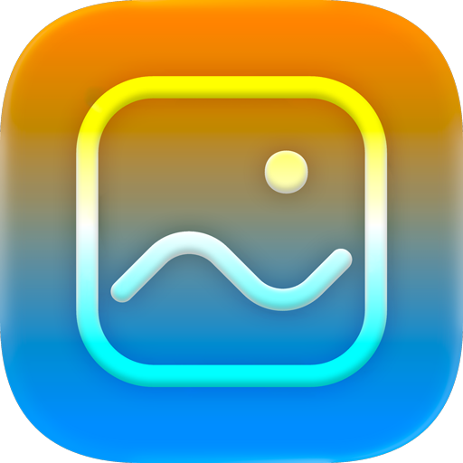

Install mygram
Add to your home screen for the best experience.
Light icon selected
1
Choose your preferred icon above
2
Tap Share in your browser toolbar
3
Select "Add to Home Screen"
The icon is set at install time. To change it later, remove the app from your home screen and reinstall from this page.
Back to mygram